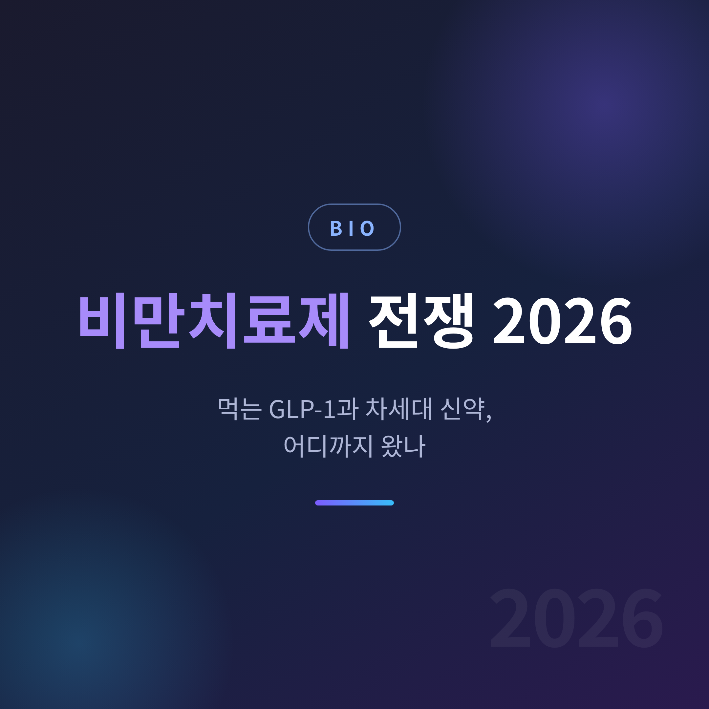
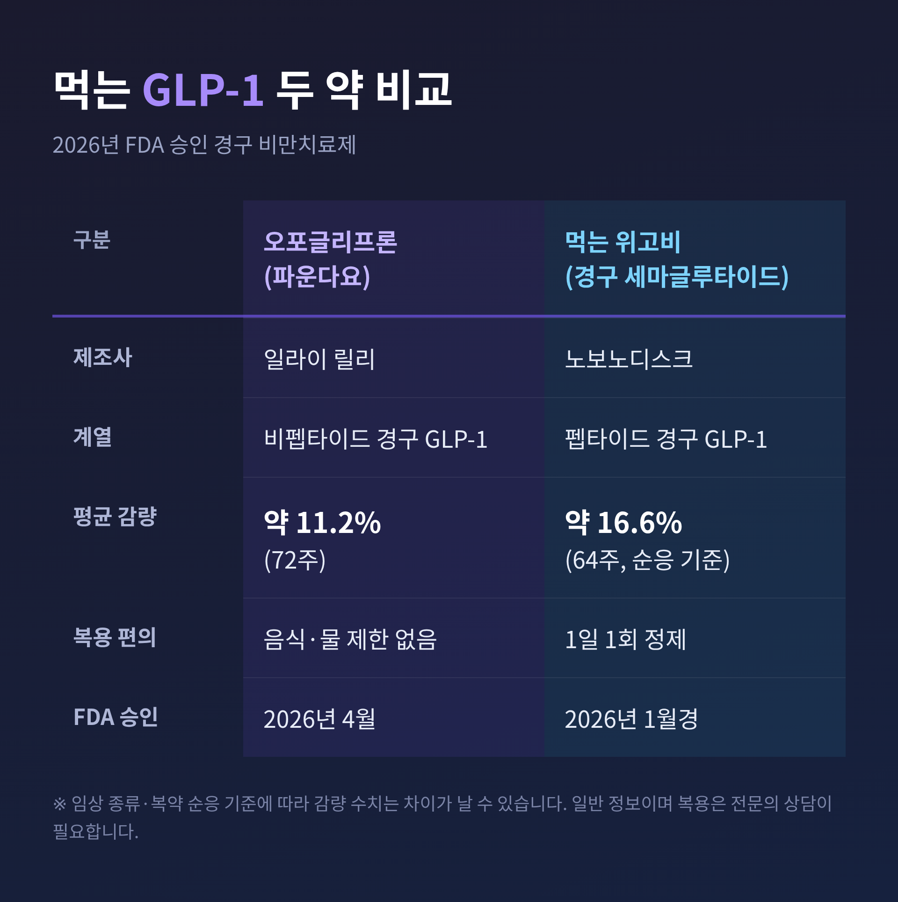
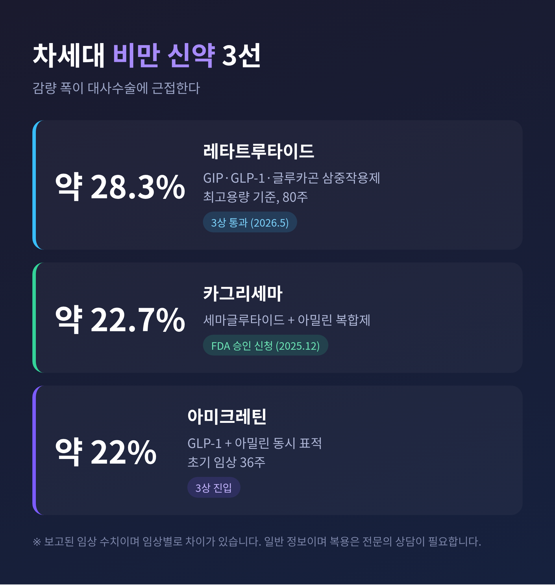

이번 글에서는 2026년 비만치료제 판도를 정리해 보겠습니다.
올해 비만약 시장에서 가장 큰 변화는 두 가지입니다. 주사에서 '먹는 약'으로 무게중심이 옮겨가기 시작했고, 감량 폭이 수술 수준에 근접하는 차세대 신약이 임상의 마지막 관문을 지나고 있습니다. 핵심만 먼저 짚고, 효과와 부작용, 한국 시장 동향까지 차근히 살펴보겠습니다.

비만치료제의 중심에는 'GLP-1'이라는 호르몬 계열 약이 있습니다. 식욕을 줄이고 포만감을 오래 유지시키는 호르몬을 흉내 낸 약입니다. 여기에 GIP, 글루카곤, 아밀린 같은 다른 호르몬 표적을 더한 '다중작용제'가 올해의 흐름입니다.
시장 규모도 빠르게 커지고 있습니다. 한 전망치는 글로벌 비만치료제 시장이 2021년 약 32억 달러에서 2026년 약 46억 달러로 늘어난다고 봅니다. 더 멀리 보는 전망은 2030년경 100조 원대 시장을 점치기도 합니다.
지금까지 비만약은 대부분 주사였습니다. 지금은 다릅니다. 2026년 들어 '먹는 약'이 미국 FDA 문턱을 넘었습니다.
먼저 일라이 릴리의 오포글리프론(제품명 파운다요)입니다. 2026년 4월 1일 승인을 받았습니다. 비펩타이드 계열의 경구 GLP-1으로, 음식이나 물을 가리지 않고 하루 중 아무 때나 먹을 수 있는 점이 강점입니다. 임상(ATTAIN-1, 비만 성인 3,127명, 72주)에서 평균 11.2%를 감량했고, 참가자의 54.6%가 10% 이상 줄었습니다.
다음은 노보노디스크의 먹는 위고비, 경구 세마글루타이드 25mg입니다. 2026년 초 승인돼 미국에서 1월부터 풀렸습니다. OASIS 4 임상(64주)에서 복약을 잘 지킨 기준으로 평균 16.6%를 감량했습니다. 이는 주사형 위고비 2.4mg과 비슷한 수준입니다.

주사 거부감이 없고 냉장 유통 부담도 줄어, 먹는 약은 접근성을 한 단계 넓힐 카드로 평가됩니다. 다만 '최초의 경구 GLP-1'이라는 표현은 소스마다 두 약을 번갈아 가리킵니다. 승인 시점과 세부 적응증 기준이 달라 양쪽 모두 첫 타이틀을 주장하는 상황으로 이해하시면 되겠습니다.
주사제 시장은 여전히 두 약이 끌고 갑니다. 위고비와 마운자로입니다.
마운자로는 성분명 티르제파타이드로, GIP와 GLP-1을 동시에 건드리는 이중작용제입니다. GLP-1 하나만 쓰는 위고비보다 감량 효능이 높은 것으로 알려져 있습니다.
한국에서는 마운자로가 2025년 8월 정식 출시됐습니다. 처음엔 저용량만 풀렸고, 고용량인 12.5mg과 15mg 프리필드펜은 2026년 6월 10일 국내에 나왔습니다. 처방도 가파릅니다. 2026년 4월 기준 마운자로 처방은 출시 8개월 만에 10배 넘게 늘어 월 20만 건을 처음 넘어섰습니다.
위고비도 가만있지 않았습니다. 마운자로 출시에 맞춰 노보노디스크는 위고비 가격을 최고 42%까지 내렸습니다. 그럼에도 마운자로의 효능이 더 높다고 알려지면서 수요는 유지됐습니다.
다만 두 약 모두 비급여입니다. 그래서 병원마다 가격 차이가 적지 않습니다. 처방 기준도 보통 BMI 수치를 따르며, 전문의 판단이 먼저입니다.
여기서부터가 올해의 진짜 화제입니다. 2026년에서 2027년 사이 시장 진입을 노리는 차세대 약들은 감량 폭이 한 단계 더 올라갑니다.
가장 강력한 후보는 일라이 릴리의 레타트루타이드입니다. GIP와 GLP-1, 글루카곤까지 세 가지를 동시에 자극하는 삼중작용제입니다. 핵심 임상(TRIUMPH-1)에서 최고용량(12mg) 기준 평균 28.3%를 감량했습니다. 80주에 걸쳐 약 70파운드를 줄인 셈입니다. 위약군은 2.2%에 그쳤습니다. 승인되면 대사수술 결과에 근접하는 약물 감량의 새 기준이 될 수 있다는 평가가 나옵니다.
노보노디스크도 두 카드를 준비했습니다. 카그리세마는 세마글루타이드에 아밀린 유사체를 더한 복합제로, 임상에서 평균 약 22.7%를 감량했고 2025년 12월 FDA 승인을 신청했습니다. 아미크레틴은 GLP-1과 아밀린을 함께 표적해, 초기 임상에서 36주 만에 약 22%를 줄여 주목받았습니다.

수치만 보면 압도적입니다. 그러나 임상의 종류와 복약 순응 가정에 따라 같은 약도 % 차이가 난다는 점은 기억해 둘 만합니다.
좋은 점만 있는 약은 없습니다. 비만치료제도 그렇습니다.
가장 흔한 건 위장관 증상입니다. 메스꺼움, 구토, 설사가 대표적입니다. 실제 연구에서 GLP-1 사용자의 약 40~70%가 이런 증상을 겪습니다. 보통 쓰다 보면 완화되지만, 용량을 올릴 때 다시 나타날 수 있습니다.
근육이 함께 빠진다는 점도 짚어야 합니다. 체중이 줄 때 지방만이 아니라 제지방, 곧 근육량도 함께 감소할 수 있습니다. 그래서 충분한 단백질 섭취와 근력 운동을 병행하라는 권고가 따라붙습니다. 고령층에서는 근감소성 비만 우려도 제기됩니다.
중단과 요요는 더 현실적인 한계입니다. 당뇨가 없는 환자의 경우 2년 안에 약 85%가 복용을 중단했다는 보고가 있습니다. 약을 끊으면 1년 안에 감량분의 약 3분의 2를 다시 회복하는 경향도 확인됐습니다. 비만치료제는 한 번 쓰고 끝나는 약이 아니라, '평생 관리'의 관점이 필요한 약인 셈입니다.
결국 약은 강력한 도구이되 만능은 아닙니다. 생활습관과 근력 유지가 함께 가야 효과가 오래갑니다.
이 경쟁에 국내 제약사도 발을 들였습니다. 가장 활발한 곳은 한미약품입니다.
한미약품은 비만대사 분야에서 국내 최다 규모인 30여 개 혁신신약 파이프라인을 가동하고 있습니다. 대표 후보인 에페글레나타이드는 국내 연 매출 1,000억 원대 블록버스터를 목표로 합니다.
눈여겨볼 전략은 '근손실 줄이기'입니다. 한미약품의 HM17321과 HM500197은 근육 증가나 마이오스타틴 억제를 통해, GLP-1의 약점인 근손실을 정조준한 신약입니다. 2026년 미국당뇨병학회(ADA)에서 첫 공개가 예정돼 있습니다. 삼중작용제 HM15275는 미국 임상 2상을 밟고 있습니다. 이 밖에 LG화학, 유한양행, 광동제약 등도 개발 대열에 있습니다.
예전엔 비만약 하면 해외 빅파마의 이야기였습니다. 지금은 국내사도 '한국발 신약'을 들고 같은 무대에 서려 합니다.
정리하면 이렇습니다.
2026년 비만치료제는 '먹는 약'으로 문이 넓어졌고, 차세대 신약으로 효능의 천장이 높아졌습니다. 동시에 부작용과 요요라는 그림자도 그대로 남아 있습니다.
더 강한 약이 나올수록, 약 하나로 끝낼 수 없다는 사실은 오히려 또렷해집니다.
어떤 약을 쓸지, 써야 할지는 숫자만으로 정해지지 않습니다. 본인의 몸 상태와 위험을 가장 잘 아는 전문의와 충분히 상의하시길 권합니다. 약이 길을 열어줄 수는 있어도, 그 길을 걷는 일은 결국 우리 자신의 몫이 아닐까 합니다.